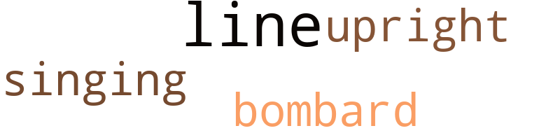
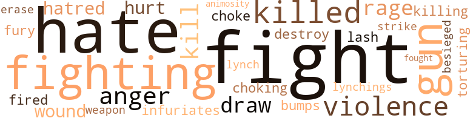

5 music-related terms matched in this text.
Most frequent terms in this topic: line (2); bombard (1); singing (1); upright (1)

bombardon.n.02
Definition: a large shawm; the bass member of the shawm family
| word |
sentence |
| bombard |
Sometimes it would be quiet on the front , I remember him saying , and then suddenly it would explode heavily in great bombard - ments and blood was spilled and lives were lost . |
singing.n.01
Definition: the act of singing vocal music
| word |
sentence |
| singing |
Youth is like a carousel , whirling and spinning and singing , unaware of the fulfillment it brings to squealing children , of its inevitable defeat when it is old and worn and rusty and out of use . |
tune.n.01
Definition: a succession of notes forming a distinctive sequence
| word |
sentence |
| line |
There is but a thin line that separates life from death . |
| line |
It is a line made by time , for time makes everything . |
upright.n.02
Definition: a piano with a vertical sounding board
| word |
sentence |
| upright |
Emmett hears the movements and stands upright . |
100 violence-related terms matched in this text.
Most frequent terms in this topic: fight (18); hate (14); fighting (10); gun (9); killed (5)

anger.n.01
Definition: a strong emotion; a feeling that is oriented toward some real or supposed grievance
| word |
sentence |
| anger |
This is not a natural anger . |
| anger |
Their voices come again , louder this time , stronger , and with greater anger . |
| anger |
He turns to me in anger , as though I were his enemy . |
| anger |
He is so full of his anger and his fear that he is crying now . |
animosity.n.01
Definition: a feeling of ill will arousing active hostility
| word |
sentence |
| animosity |
They contaminate itl They sweep ugliness into it - and injustice - a stain that spreads from land to land and brings with it ridicule and animosity and hatred ; a stain that is a target for communism and a weak defense for democracy . " |
besiege.v.01
Definition: surround so as to force to give up
| word |
sentence |
| besieged |
Suddenly I am besieged with a feeling that causes the bottom to fall from my stomach - the feeling that one gets when , in a dream , he climbs to the top of a hill , and then falls down from it into some never-ending space . |
bump.n.01
Definition: a lump on the body caused by a blow
| word |
sentence |
| bumps |
As his head bumps against the top step , something rolls out of his eye socket and tumbles down the steps into the dust . |
destroy.v.04
Definition: put (an animal) to death
| word |
sentence |
| destroy |
They believe that if they destroy me , they will destroy everything ; but you must prove them wrong , Emmett . |
draw.v.23
Definition: pull (a person) apart with four horses tied to his extremities, so as to execute him
| word |
sentence |
| draw |
We draw into ourselves as though those outside were reaching for us . |
| draw |
Should I defend these truths , Emmett , or should I let them remain and be weighed with the new years - the years that will look beyond our skin , when the truth will draw response from justice and freedom ? |
| draw |
" You will draw respect and fear from them wherever you go when you leave here . " |
erase.v.01
Definition: remove from memory or existence
| word |
sentence |
| erase |
I would destroy their self-pity through admiration , and I would erase their banal acceptance of themselves by identify - ing them with their own history . |
fight.n.02
Definition: the act of fighting; any contest or struggle
| word |
sentence |
| fighting |
Our leaders must be strong men , Emmett - independent men - men who are free of economic reprisal - men whose words can reach the great masses of people - men who know that a strong basis for our fighting , for our victory , must be love . |
| fighting |
And they would sacri - fice their homes and their lives , and be forced into an exist - ence so low that their fighting would be useless . |
fight.n.05
Definition: a boxing or wrestling match
| word |
sentence |
| fight |
We work with greater fury now , fight - ing off a death we had waited for and prepared for , once more postponing what for us is impossible . |
| fight |
At least the fight is shorter . |
fight.v.02
Definition: fight against or resist strongly
| word |
sentence |
| fight |
They will think of ways to get out - of ways to get even - to fool them ; and they will fight . " |
| fight |
But how can they fight ? " asks Emmett . |
| fight |
" But they will fight by running away ; and if our people run away from here , this land will go to waste . " |
| fight |
Let 's stay here and fight as we should . " |
| fight |
" But we ca n't fight , Emmett . |
| fight |
In war we love , but we still fight . |
| fight |
Then why should n't we fight back ? |
| fighting |
" I feel so tired , Emmett - always wanting , always fighting for what God intended me to have . |
| fighting |
We are fighting a moral problem in this country , Emmett , and we are fighting it with legislation . |
| fighting |
We are fighting a moral problem in this country , Emmett , and we are fighting it with legislation . |
| fighting |
We have lived in fighting and in pain . |
| fight |
We do not fight war because we want to or be - cause we hate , but because we have to . |
| fighting |
You believe in fighting with wisdom and honesty and truth . |
| fight |
I fight my way through the heavy smoke toward the kitchen . |
| fighting |
He is fighting des - perately for control of himself , and his hand reaches mine . |
| fight |
But they are forced into ties with this force because they can not fight it . |
| fight |
They can not be called " Nigger-lovers , " and they would have to leave this land or stay and fight a losing battle . |
| fights |
He fights against me still . |
| fighting |
But that is the way it is when you are fighting for something and are trying to be a leader . |
| fight |
" We must fight through our ministers . |
| fight |
They hold in their hands the people who will fight , once they know what they are fighting for . |
| fighting |
They hold in their hands the people who will fight , once they know what they are fighting for . |
| fight |
I often wonder how many of them would be willing to sacrifice their jobs to fight for the practice of the principles of this land . " |
| fight |
You can fight better when you are equal . |
| fight |
We must fight and we must mold loose ends until we have won . |
| fought |
It was for the cause we fought . |
fury.n.01
Definition: a feeling of intense anger
| word |
sentence |
| rage |
He storms past us in a rage of madness . |
| rage |
I had expected him to rage , to cry - to lose control of himself . |
| fury |
We work with greater fury now , fight - ing off a death we had waited for and prepared for , once more postponing what for us is impossible . |
| rage |
John is wild with rage . |
gag.v.06
Definition: cause to retch or choke
| word |
sentence |
| choke |
I swallow what must be a muscle or a tendon , a stringy , bitter and gagging thing that seems to choke me . |
| choking |
And even when my choking has stopped , I can not forget its bitter and blood-tinged taste . |
gun.n.01
Definition: a weapon that discharges a missile at high velocity (especially from a metal tube or barrel)
| word |
sentence |
| gun |
John has a gun in his hands . |
| gun |
John says , " You did n't know I had a gun under that plank , did you ? |
| gun |
He takes a big step forward and points the gun at my face . |
| gun |
He reaches the front window and smashes it with the barrel of his gun . |
| gun |
I 've got a gun . |
| gun |
A gun ! |
| gun |
A shot roars from his gun . |
| gun |
Then another and another un - til his gun is dry . |
| gun |
He looks at his gun . |
hate.n.01
Definition: the emotion of intense dislike; a feeling of dislike so strong that it demands action
| word |
sentence |
| hate |
In running , we build up hate . |
| hate |
Then the hate would go . " |
| hatred |
They would want us to hear these cries , and they would want us to amend for them , not by hatred or violence , but by growing stronger than they . |
| hate |
When there is hate there is always fear - and mistrusting and misjudging . |
| hatred |
They contaminate itl They sweep ugliness into it - and injustice - a stain that spreads from land to land and brings with it ridicule and animosity and hatred ; a stain that is a target for communism and a weak defense for democracy . " |
hate.v.01
Definition: dislike intensely; feel antipathy or aversion towards
| word |
sentence |
| hate |
We do not fight war because we want to or be - cause we hate , but because we have to . |
| hate |
Nor do we want them to fear us because we hate them , but because sometimes fear breeds love . " |
| hate |
He shouts in a wild voice , " I hate you - dirty white trash ! |
| hate |
I hate you ! |
| hate |
Do you hear me - hate you ! " |
| hate |
You do n't hate them , John . |
| hate |
Edward and I are afraid , and we do n't hate them . |
| hate |
Do you hate them , too ? |
| hate |
I suppose that is why I do n't hate them . " |
| hate |
" You did n't hate him , Edward ? " |
| hate |
" No , I did n't , " say I. " I think I never could have-not since I do n't hate the others . |
infuriate.v.01
Definition: make furious
| word |
sentence |
| infuriates |
But my silence only infuriates him more . |
kill.v.10
Definition: cause the death of, without intention
| word |
sentence |
| kill |
I say , " Do you want to kill me , John ? " |
| kill |
" I 'll kill you , " he shouts . |
| kill |
" I 'll kill anybody who tries to stop me from living - anybody ! |
| killed |
I wanted to say it to him , but he might have killed me for it . |
| killed |
He probably injured some of their women and children - or probably killed some of them . |
| killing |
They belittle our ideals and our God , and they continue to have their way - killing us , run - ning us from our homes , and denying us the freedoms that are ours . " |
| killed |
The sudden explosion of the flames would have killed us immediately . |
| killed |
My father found this out , I am sure , before he was killed in the war . |
| kill |
They 'll kill us ! " |
| killed |
He might have killed you . " |
lynch.v.01
Definition: kill without legal sanction
| word |
sentence |
| lynch |
They hunt my people down and persecute them and beat them and lynch them . |
lynching.n.01
Definition: putting a person to death by mob action without due process of law
| word |
sentence |
| lynchings |
The monster and the de - mon in man will rule him and his state of being , and injus - tices - lynchings and bombings and violence - will forever rule the earth . |
open_fire.v.01
Definition: start firing a weapon
| word |
sentence |
| fired |
John fired on them . |
pain.v.02
Definition: cause emotional anguish or make miserable
| word |
sentence |
| hurt |
" John is too strong to hurt . " |
| hurt |
" Nothing is easy to believe when you are hurt and everything goes against you . |
strike.v.04
Definition: make a strategic, offensive, assault against an enemy, opponent, or a target
| word |
sentence |
| strike |
There are no allies behind us to strike back at our enemy and scatter them . |
torment.v.01
Definition: torment emotionally or mentally
| word |
sentence |
| torturing |
I say , " They are torturing him , and they are trying to tor - ture us . |
violence.n.01
Definition: an act of aggression (as one against a person who resists)
| word |
sentence |
| violence |
The monster and the de - mon in man will rule him and his state of being , and injus - tices - lynchings and bombings and violence - will forever rule the earth . |
| violence |
How I wish I could hear a voice from them - not their shouts and their jeers - but a voice , one voice from amongst the crowd , a voice set aside from violence , a voice unguided by the blind force of the mob which thinks it does the will of their God and their land - a voice soft and clear , a voice with a heart and with visions and love . |
| violence |
They would want us to hear these cries , and they would want us to amend for them , not by hatred or violence , but by growing stronger than they . |
| violence |
For as long as we are silent , as long as we are composed , they will not strike in violence . |
| violence |
So they join the forces of violence . |
weapon.n.01
Definition: any instrument or instrumentality used in fighting or hunting
| word |
sentence |
| weapon |
Learning is our biggest weapon . |
whip.v.04
Definition: strike as if by whipping
| word |
sentence |
| lash |
I am just blind - and weak and futile - so that it makes me want to lash out at someone . |
wound.n.01
Definition: an injury to living tissue (especially an injury involving a cut or break in the skin)
| word |
sentence |
| wound |
It never mends a wound . |
| wounds |
But the wounds were always there . |
30 religion-related terms matched in this text.
Most frequent terms in this topic: God (11); faith (8); Christianity (2); sacrifice (2); church (2)

catholic.n.01
Definition: a member of a Catholic church
| word |
sentence |
| Catholics |
Mainly , you would say , Negroes , Jews and Catholics . |
christendom.n.01
Definition: the collective body of Christians throughout the world and history (found predominantly in Europe and the Americas and Australia)
| word |
sentence |
| Christianity |
How they practice Christianity and segregation at the same time . " |
| Christianity |
It has no relation even to the practice of Christianity . " |
church.n.02
Definition: a place for public (especially Christian) worship
| word |
sentence |
| church |
Emmett says , " Some of them will go to church on Sunday - most of them , in fact . |
| church |
In turn , they have been cared for and repaid in a way they have accepted - a Saturday off when they could go into town , and a Sunday for their big church meetings . |
eden.n.01
Definition: any place of complete bliss and delight and peace
| word |
sentence |
| heavens |
They reach high and fall again , hungry to stay alive , to fill the heavens with their fire . |
god.n.03
Definition: a man of such superior qualities that he seems like a deity to other people
| word |
sentence |
| God |
" I feel so tired , Emmett - always wanting , always fighting for what God intended me to have . |
| God |
And the images that our deaths would bring are not from our own doings - but from God 's . |
| God |
God intended it this way . |
| God |
If men can suffer under God for their misdoings , then there is no evil in it . " |
| God |
" But God can judge . |
| God |
We can not flee from what God intended us to have . |
| God |
How I wish I could hear a voice from them - not their shouts and their jeers - but a voice , one voice from amongst the crowd , a voice set aside from violence , a voice unguided by the blind force of the mob which thinks it does the will of their God and their land - a voice soft and clear , a voice with a heart and with visions and love . |
| God |
Shall I begin with the Holy Scriptures , with the Constitution , with the Bill of Rights - with words of proof on paper , honest words and just - words which they twist and deform for their own advantage , whether it be the word of God or the word of the law ? |
| God |
In my prayers I ask for God 's hand , but He seems so far away . |
| God |
And this is the thing that aches inside us , that tears us away inside and causes us to lose our faith - faith in ourselves and in our country and in our God . |
| God |
It was God 's wish that man have a will . |
jew.n.01
Definition: a person belonging to the worldwide group claiming descent from Jacob (or converted to it) and connected by cultural or religious ties
| word |
sentence |
| Jews |
Mainly , you would say , Negroes , Jews and Catholics . |
prayer.n.01
Definition: the act of communicating with a deity (especially as a petition or in adoration or contrition or thanksgiving)
| word |
sentence |
| prayer |
In a way , it is like a prayer . |
| prayers |
In my prayers I ask for God 's hand , but He seems so far away . |
religion.n.01
Definition: a strong belief in a supernatural power or powers that control human destiny
| word |
sentence |
| faith |
We hear each other 's words , but we do not hold them in trust and faith . |
| faith |
The days we strolled up the long clay roads and sprawled under the big oak trees , and sat on the stumps beside the swamps , peering into the water , and with faith and with hope imagined the good we would bring to our land . " |
| faith |
The moment we run , the mo - ment we lose control , they would know we did not believe in our actions , had no faith in them , and they would attack us . . . perhaps . |
| faith |
We have faith in these things because we have faith in people , and time will help the people . |
| faith |
We have faith in these things because we have faith in people , and time will help the people . |
| faith |
But not in courage - not in faith . |
| faith |
And this is the thing that aches inside us , that tears us away inside and causes us to lose our faith - faith in ourselves and in our country and in our God . |
| faith |
And this is the thing that aches inside us , that tears us away inside and causes us to lose our faith - faith in ourselves and in our country and in our God . |
sacrifice.v.04
Definition: make a sacrifice of; in religious rituals
| word |
sentence |
| sacrifice |
I often wonder how many of them would be willing to sacrifice their jobs to fight for the practice of the principles of this land . " |
| sacrifice |
They would sacrifice the children they teach , and learning would cease . |